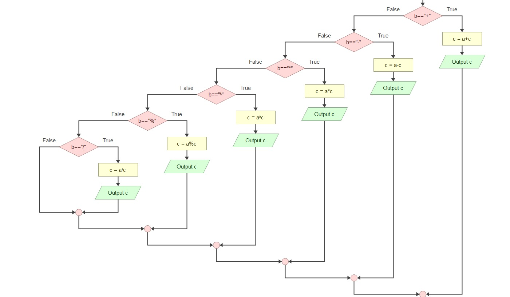
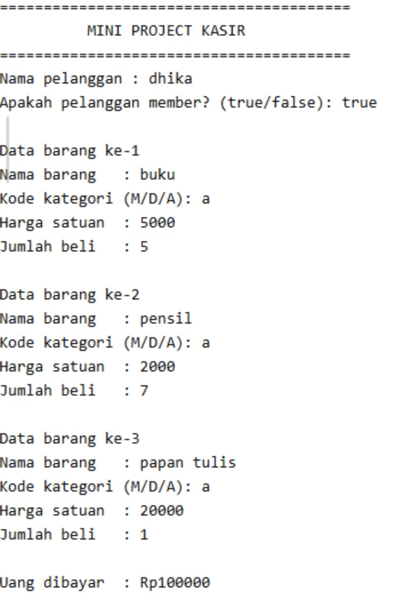
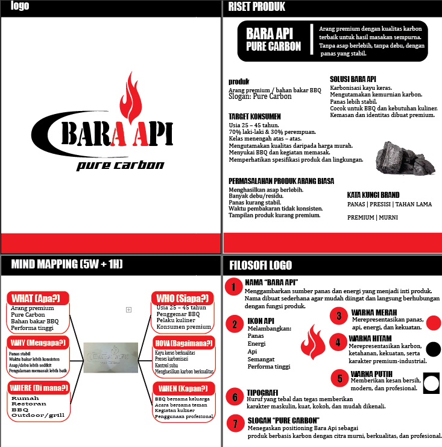

85%
HTML & CSS
Struktur, layout & tampilan responsif
Halo, saya Dhika Frisco.
Saya Dhika Frisco Dwi Pratama, siswa X RPL 3 di SMK KRIAN 1 SIDOARJO. Menjelajahi dunia teknologi dengan rasa ingin tahu, satu langkah kecil dalam satu waktu.
Halo, nama saya Dhika Frisco Dwi Pratama, biasa dipanggil Dhika. Saya siswa di SMK Krian 1 Sidoarjo, jurusan Rekayasa Perangkat Lunak (RPL), kelas X RPL 3.
Saya tertarik pada dunia teknologi dan musik. Saya senang mempelajari musik, serta dasar-dasar pengembangan web dan pemrograman, mulai dari merancang tata letak hingga menambahkan fitur interaktif.
Selain belajar, saya juga senang bermain keyboard.
Cita-cita: Menjadi pemain keyboard profesional
Keahlian: Bermain keyboard, dasar pengembangan web, dan pemrograman
Hobi: Bermain keyboard, mempelajari teknologi, dan bermain game
Lokasi: Desa Pejangkungan, Dusun Kates, Kecamatan Prambon, Kabupaten Sidoarjo
Rekayasa Perangkat Lunak · Saat ini
Terus berkembang lewat latihan.
Persentase berdasarkan penilaian pribadi.
Struktur, layout & tampilan responsif

Logika & interaksi di browser

Dasar pemrograman & pengolahan data

Dasar sintaks & pemrograman objek
Beberapa project yang saya kerjakan sebagai bagian dari proses pembelajaran dan pengembangan kemampuan di bidang teknologi.
4 proyek ditampilkan.

PROJEK / 01 KALKULATOR SEDERHANAKALKULATOR SEDERHANA MENGGUNAKAN FLOWGORITHM

PROJECT / 02 MINI KASIRproject mini kasir dari java

PROJECT / 03 DESAIN LOGOTYPEdesain logotype BARA API sederhana dari adobe illustrator
 PROJECT / 04
LOGIC / BASICS
PROJECT / 04
LOGIC / BASICS
?
Untuk berbagi ide, bertanya, atau sekadar menyapa, temukan saya di Instagram dan blog pribadi.
Instagram / @dhikafrisco ↗Email dan WhatsApp belum tersedia. Anda dapat menyalin pesan lalu mengirimkannya lewat Instagram.